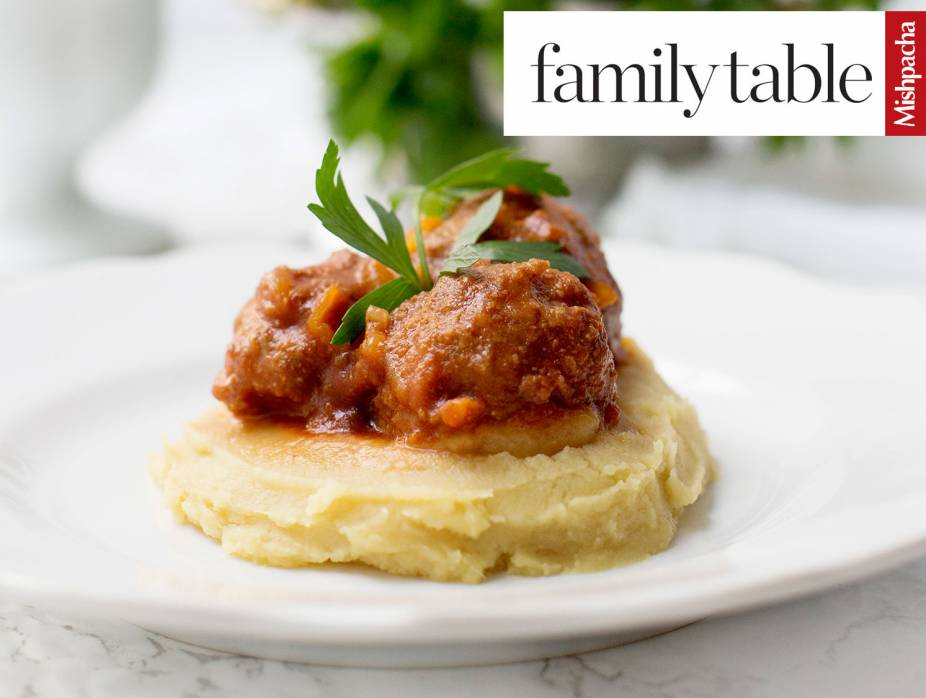
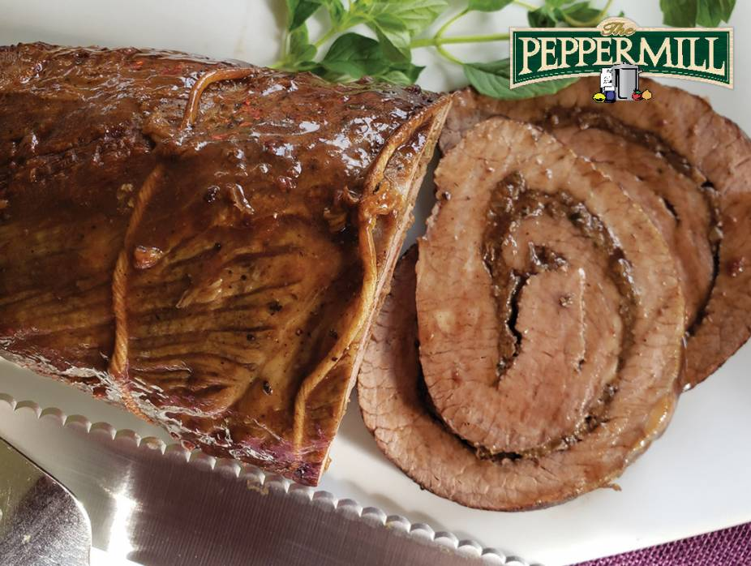

Shishito peppers are a delicious, mild pepper. In this recipe, they are cooked in a cast iron pan seasoned with soy, garlic, honey, and sesame oil. Just a warning, 1 in 10 will be hotter than the rest, so be prepared as you bite into each one.
Difficulty: Easy
Diet: Gluten Free , Low Carb , No Refined Sugar
Cooking and Prep: 30 min
Serves: 4
Allergy: contains SESAME, SOY
Ingredients
Salad Ingredients
1 and 1/2 pounds stew meat, cut into really small pieces
2 tablespoons soy sauce
1 tablespoon minced garlic or 3 cubes Gefen Frozen Garlic
1 tablespoon Manischewitz Honey
1 teaspoon Gefen Sesame Oil
8 ounces shishito peppers
Prepare the Honey Garlic Beef and Shishito Peppers
Place a cast iron pan over medium heat. Put enough oil to cover the bottom of the pan. Add the meat to the pan and spread out in a single layer. Stir every few minutes so it’s cooked on all sides and all the way through. Drain the liquid that accumulates.
Mix together the soy sauce, garlic, honey, and sesame oil. Pour into the pan with the meat. Mix well so all the meat is coated. Remove the meat from the pan and set aside.
Place the peppers in the pan and cook until seared on all sides. Return the meat back to the pan and mix it all together.
Note: While these peppers are cooked whole, the stem is not meant to be eaten, so be sure to cut or pull them off as you eat them.

Full ’n Free Meatballs
This meatball recipe is perfect for Tishrei. First, it’s sweet. And second, it containes one of the simanim — dates! The dates give the sauce enough sweetness that you don’t need any refined sugar, but you still get that classic sweet-and-sour flavor. If you’re trying to limit your meat intake. you can use ground chicken instead. Use half dark chicken and half light chicken for a balanced texture.
Difficulty: Medium
Diet: Gluten Free , No Refined Sugar
Cooking and Prep: 2.5 hrs
Serves: 6
Allergy: contains EGG
Ingredients
Meatballs
2 pounds (1 kilogram) lean ground beef
1 egg
1/4 cup grain-free flour blend or cream of rice
1 tablespoon Gefen Onion Powder
1 tablespoon Gefen Garlic Powder
3/4 teaspoon salt
Sauce
2 tablespoons avocado or light olive oil, for sautéing
3 large onions, diced
6 cloves garlic, crushed or 6 cubes Gefen Frozen Garlic
16 Medjool dates, pitted
hot water, to cover
4 (17.6-oz./500-g.) boxes tomato sauce (I use Tuscanini)
1 teaspoon salt
1 teaspoon Gefen Oregano
1 (8-oz./225-g.) bag shredded cabbage (optional)
Prepare the Meatballs
Mix all meatball ingredients together, being careful not to overmix. Set aside.
In a large pot over medium heat, heat oil and sauté onions and garlic until transparent.
Place pitted dates in a two-cup measuring cup. Pour boiling water to cover the dates, and let sit for 10 minutes.
Put the dates and one cup of the date-soaking water into the bowl of a food processor, reserving the remaining water. Blend until it becomes a paste or thick liquid. Add the date paste and extra water from soaking the dates to the sautéed onions. Add tomato sauce and spices. If the sauce is too thick, add a bit of water.
When the sauce is hot, form gumball-sized meatballs and drop them into the sauce. Stir the sauce after every few meatballs. Add shredded cabbage, if using. Lower heat and simmer, covered, for two hours.

Stuffed Brisket
Add rich flavor to brisket with this savory filling.
Difficulty: Medium
Diet: Low Carb
Cooking and Prep: 1 hr 50 min
Serves: 8
Allergy: contains SOY, WHEAT, GLUTEN
Ingredients
Filling
2 tablespoons olive oil
2 shallots, finely diced
3 cloves garlic, chopped, plus 2 cloves garlic, crushed
1/4 cup Peppermill Porcini Powder
1/2 cup Alfasi Cabernet Sauvignon or other dry red wine
1 tablespoon Soy Sauce
1/2 cup plain panko crumbs, such as Gefen Panko Crumbs
1/4 cup chopped parsley
Brisket
1 4 pound second cut brisket
kosher salt
freshly ground black pepper
Pan Sauce
1/2 cup chicken stock, such as Manischewitz Chicken Broth
1/4 cup Jeunesse Cabernet Sauvignon or other red wine
kosher salt, to taste
freshly ground black pepper, to taste
Prepare the Meatballs
Mix all meatball ingredients together, being careful not to overmix. Set aside.
In a large pot over medium heat, heat oil and sauté onions and garlic until transparent.
Place pitted dates in a two-cup measuring cup. Pour boiling water to cover the dates, and let sit for 10 minutes.
Put the dates and one cup of the date-soaking water into the bowl of a food processor, reserving the remaining water. Blend until it becomes a paste or thick liquid. Add the date paste and extra water from soaking the dates to the sautéed onions. Add tomato sauce and spices. If the sauce is too thick, add a bit of water.
When the sauce is hot, form gumball-sized meatballs and drop them into the sauce. Stir the sauce after every few meatballs. Add shredded cabbage, if using. Lower heat and simmer, covered, for two hours.